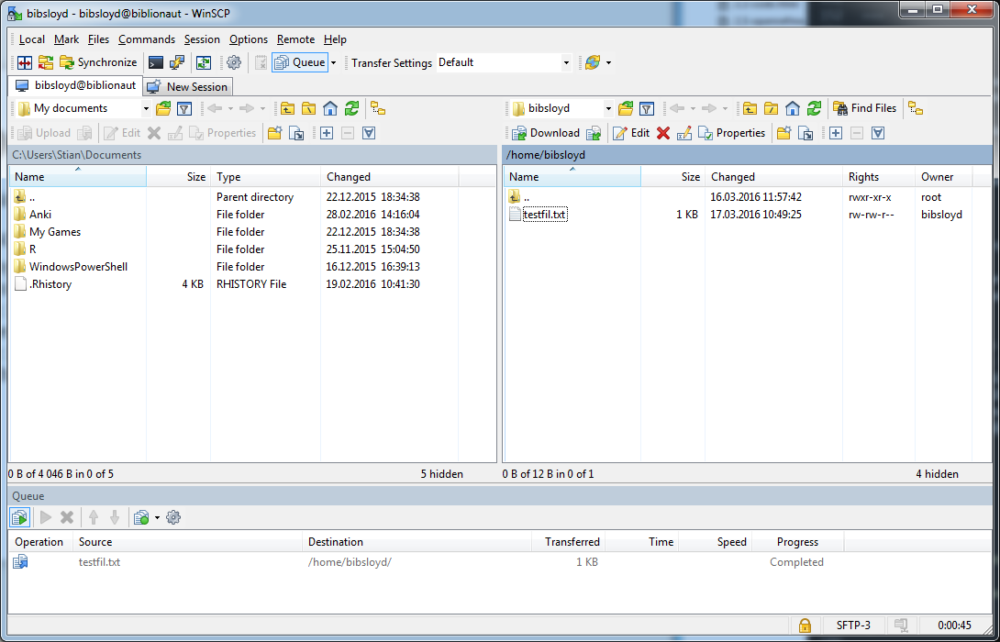

class: center, middle, inverse # Kommandolinja, WinSCP og Putty Biblioteksløyd 2016-03-18 .footnote[Slides: https://scriptotek.github.io/2016-03-17-BS/slides/2.1-shell.html] ??? du kan skrive slide notes her --- # Hva vi skal lære 1. Enkel bruk av kommandolinjeverktøy for å administrere filer --- # Hva vi skal lære 1. Enkel bruk av kommandolinjeverktøy for å administrere filer 1. Bruk av WinSCP for å kopiere filer til/fra andre maskiner --- # Hva vi skal lære 1. Enkel bruk av kommandolinjeverktøy for å administrere filer 1. Bruk av WinSCP for å kopiere filer til/fra andre maskiner 1. Bruk av Putty for å administrere filer på ekstern maskin --- # Hva vi skal lære 1. Enkel bruk av kommandolinjeverktøy for å administrere filer 1. Bruk av WinSCP for å kopiere filer til/fra andre maskiner 1. Bruk av Putty for å administrere filer på ekstern maskin 1. (Hvis tid: Bruk av Git på kommandolinja) --- # Hva _er_ kommandolinja? --- # Hva _er_ kommandolinja? _"The command line is the ultimate seat of power on your computer."_ --- # Hva _er_ kommandolinja? _"The command line is the ultimate seat of power on your computer."_ Nesten alt du kan gjøre ved å klikke deg rundt på en data kan du gjøre ved å gi den skriftlige kommandoer. --- # Hva _er_ kommandolinja? _"The command line is the ultimate seat of power on your computer."_ Nesten alt du kan gjøre ved å klikke deg rundt på en data kan du gjøre ved å gi den skriftlige kommandoer. Eksempler: * Åpne et program * Laste ned et program * Kopiere filer fra en ekstern maskin --- # Bash * Bash er kanskje det mest brukte kommandolinjeverktøyet. * Bash kommer med de fleste Linux-varianter. Det er bash man som oftest bruker når man åpner en terminal i Linux. * Vi skal bruke Git Bash i våre eksempler. Git Bash er en bash-variant vi kan bruke på Windows. .footnote[Git Bash kan lastes ned [her](https://git-scm.com/downloads)] --- # Powershell * Vi kan tenke på Powershell som Microsoft sin variant av bash. * PowerShell er installert på de aller fleste Windows-maskiner. * Mange kommandoer kan man bruke helt likt i Bash og i Powershell. I våre eksempler skal vi bruke begge. .footnote[PowerShell kan lastes ned [her](https://msdn.microsoft.com/en-us/powershell/mt173057.aspx)] --- # Eksempel 1: Åpne et program 1. Åpne PowerShell/Git Bash 1. Skriv `notepad` 1. Trykk enter --- # Eksempel 2: Se på mapper 1. Åpne PowerShell/Git Bash 1. Skriv `pwd` for å se _hvor_ du er 1. Skriv `ls` for å se _hva_ som er der --- # Eksempel 3: Flytte en fil 1. Åpne PowerShell/Git Bash 1. Skriv `touch testfil.txt` for å lage en tom tekstfil 1. Skriv `mkdir testmappe` for å lage en mappe 1. Skriv `ls` for å se hva som er der du befinner deg 1. For å flytte `testfil.txt` inn i `testmappe` bruker vi kommandoen `cp testfil.txt testmappe/` `cp source target` - kommandoen for å kopiere noe fra `source` til `target` --- # Oppsummering Vi har så langt brukt flere kommandoer for å gjøre ting. La oss ta en oppsummering: 1. `ls`: List. Viser hva som finnes der du er. 1. `pwd`: Print Working Directory. Viser hvor du er i mappestrukturen. 1. `touch`: Lager en tom fil. 1. `mkdir`: Make directory. Lager en mappe. 1. `cp`: Copy. Kopierer en fil/mappe fra et sted til et annet. --- # Vil du lære mer om kommandolinja? Det finnes mange svært gode onlinekurs som lærer deg å bruke kommandolinja. Her er noen forslag: * The Programming Historian: Introduction to the Bash Command Line http://programminghistorian.org/lessons/intro-to-bash * CodeAcademy: Learn the Command Line https://www.codecademy.com/ru/courses/learn-the-command-line * udemy: Linux Command Line Basics https://www.udemy.com/linux-command-line-volume1/ --- # WinSCP De fleste av oss har kopiert filer på egen maskin før, men hvordan flytter man filer til/fra en ekstern maskin - uten remote desktop? WinSCP, eller Windows Secure Copy, er et gratis open-source program som lar deg overføre filer til/fra eksterne maskiner. .footnote[WinSCP kan lastes ned [her](https://winscp.net/eng/download.php)] --- # Eksempel: Koble til en ekstern maskin Dan Michael sin server, [www.biblionaut.net](http://www.biblionaut.net/), har en mappe vi skal koble oss til. 1. Åpne WinSCP 1. Skriv inn login info for biblionaut: File protocol: `SFTP` Host name: `biblionaut.net` Port number: `22987` User name: `bibsloyd` Password: `h#velbenk8` 1. Login --- <div style="width:100%;">  </div> --- # Eksempel: Koble til ekstern maskin <div style="margin-top: 20px;"> <div style="float:left; border: 1px solid black; width: 49%;"> <strong>Venstre</strong>:<br> Din egen maskin </div> <div style="float:right; border: 1px solid black; width: 49%;"> <strong>Høyre</strong>:<br> Ekstern maskin </div> </div> <div style="clear:both;"></div> Vi kan nå bruke mappene på serveren (til høyre) som om de var på vår egen maskin. Dra filen `testfil.txt` over til din egen maskin for å kopiere den. --- # Eksempel: Koble til ekstern maskin <div style="margin-top: 20px;"> <div style="float:left; border: 1px solid black; width: 49%;"> <strong>Venstre</strong>:<br> Din egen maskin </div> <div style="float:right; border: 1px solid black; width: 49%;"> <strong>Høyre</strong>:<br> Ekstern maskin </div> </div> <div style="clear:both;"></div> Vi kan nå bruke mappene på serveren (til høyre) som om de var på vår egen maskin. Dra filen `testfil.txt` over til din egen maskin for å kopiere den. That's it! Enkelt og greit - akkurat som å bruke en mappe på din egen maskin. --- # Putty * Putty er en SSH-klient for Windows. * SSH, eller Secure Shell, er en nettverksprotokoll som lar deg bruke kommandolinja på en annen maskin. Vi har tidligere: - brukt kommandolinja for å administrere filer på egen maskin - brukt WinSCP for å administrere filer på en ekstern maskin. Nå skal vi bruke kommandolinja for å administrere filer på en ekstern maskin, ved hjelp av Putty. .footnote[Putty kan lastes ned [her](http://www.chiark.greenend.org.uk/~sgtatham/putty/download.html)] --- # Eksempel: Koble til ekstern maskin 1. Åpne Putty 1. Skriv inn server info for biblionaut: Host name: `biblionaut.net` Port number: `22987` 1. Skriv inn brukernavn: `bibsloyd` og trykk enter 1. Skriv inn passord: `h#velbenk8` og trykk enter Vi er nå kobla på! --- # Eksempel: Administrere filer Nå som vi er kobla inn på kommandolinja på serveren, kan vi gjøre de samme tingene vi har gjort tidligere. * Skriv `pwd` for å se hvor i mappestrukturen vi er * Skriv `ls` for å se hva som befinner seg i mappa vi er inne i * Skriv `mkdir [ditt navn]` for å lage en mappe med ditt navn. * `ls` vil vise at mappen nå finnes * `cd mappenavn` vil flytte deg inn i mappen --- # Eksempel: Administrere filer * Skriv `pwd` for å sjekke at du nå er inne i din egen mappe * Skriv `touch mintestfil.txt` for å lage en tom testfil * Skriv `rm mintestfil.txt` for å slette filen. --- # Eksempel: Administrere filer * Skriv `pwd` for å sjekke at du nå er inne i din egen mappe * Skriv `touch mintestfil.txt` for å lage en tom testfil * Skriv `rm mintestfil.txt` for å slette filen. NB! Når man sletter ting via kommandolinja så havner de ikke i noen papirkurs. Vært derfor forsiktig med når dere bruker `rm`. --- # Git på kommandolinja For å starte et repository i en mappe bruker vi `git init`. For å fortsette på et repository som finner på Github - for å få det "repoet" over på egen maskin, kan vi bruke `git clone repo_url`. Eksempel: 1. Lag en mappe: `mkdir ub-kurs` 1. Gå inn i mappen: `cd ub-kurs` 1. "Klon" (last ned) repoet hit: `git clone https://github.com/stianlagstad/ub-kurs-test .` ??? se http://rogerdudler.github.io/git-guide/